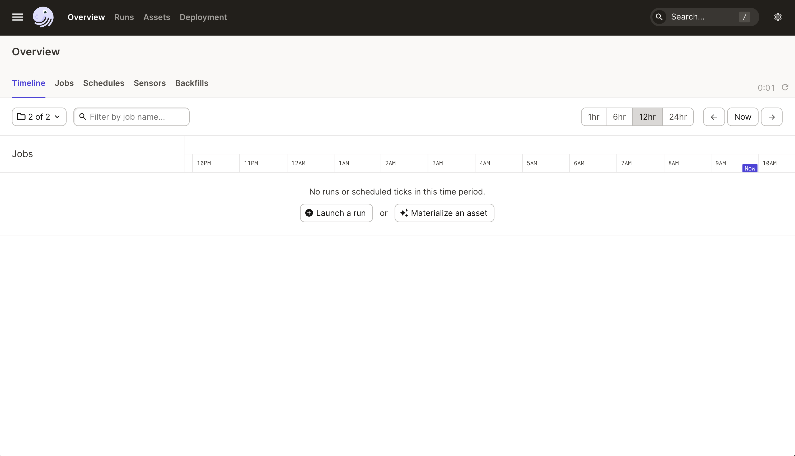
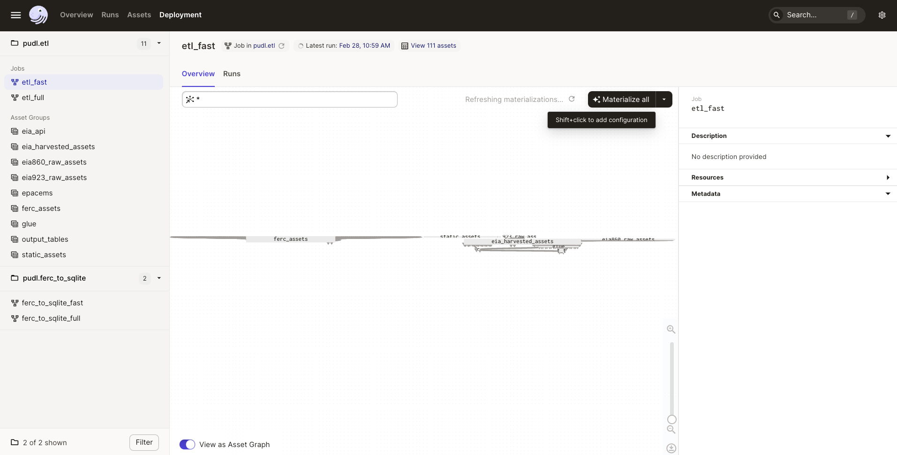

Running the ETL Pipeline#
So you want to run the PUDL data processing pipeline? This is the most involved way to get access to PUDL data. It’s only recommended if you want to edit the ETL process or contribute to the code base. Check out the Data Access documentation if you just want to use already processed data.
These instructions assume you have already gone through the Development Setup.
Database initialization#
Before we run anything, we’ll need to make sure that the schema in the database
actually matches the schema in the code - run alembic upgrade head to create
the database with the right schema. If you already have a pudl.sqlite you’ll
need to delete it first.
Database schema migration#
If you’ve changed the database schema, you’ll need to make a migration for that change and apply that migration to the database to keep the database schema up- to-date:
$ alembic revision --autogenerate -m "Add my cool table"
$ alembic upgrade head
$ git add migrations
$ git commit -m "Migration: added my cool table"
When switching branches, Alembic may refer to a migration version that is not on your current branch. This will manifest as an error like this when running an Alembic command:
FAILED: Can't locate revision identified by '29d443aadf25'
If you encounter that, you will want to check out the git branch that does
include that migration in the migrations directory. Then you should run
alembic downgrade head-1 to revert the database to the prior version. Then
you can go back to the branch that doesn’t have your migration, and use Alembic
in peace.
If the migrations have diverged for more than one revision, you can specify the specific version you would like to downgrade to with its hash. You may also want to keep a copy of the old SQLite database around, so you can easily switch between branches without having to regenerate data.
More information can be found in the Alembic docs.
Dagster#
PUDL uses Dagster to orchestrate its data pipelines. Dagster makes it easy to manage data dependences, parallelize processes, cache results and handle IO. If you are planning on contributing to PUDL, it is recommended you read through the Dagster Docs to familiarize yourself with the tool’s main concepts.
dg quickstart#
PUDL is configured as a dg project. dg is Dagster’s official CLI. It can run
most if not all of the tasks managed through the UI.
# Start up the Dagster UI webserver and daemons
$ pixi run dg dev
# Launch a full job with its default config
$ pixi run dg launch --job etl_fast
# Select a subset of assets to materialize
$ pixi run dg launch --assets "group:raw_eia861"
# List all of the Dagster definitions
$ pixi run dg list defs
For full dg CLI documentation and options, see the Dagster docs:
dg CLI reference.
There are a handful of Dagster concepts worth understanding prior to interacting with the PUDL data processing pipeline:
Dagster UI#
The Dagster UI is used for monitoring and executing ETL runs.
Software Defined Assets (SDAs)#
An asset is an object in persistent storage, such as a table, file, or persisted machine learning model. A software-defined asset is a Dagster object that couples an asset to the function and upstream assets that are used to produce its contents.
SDAs or “assets”, are the computation building blocks in a Dagster project. Assets are linked together to form a direct acyclic graph (DAG) which can be executed to persist the data created by the assets. In PUDL, each asset is a dataframe written to SQLite or parquet files. Assets in PUDL can be raw extracted dataframes, partially cleaned tables or fully normalized tables.
SDAs are created by applying the @asset decorator to a function.
The main PUDL ETL is composed of assets. Assets can be “materialized”, which means running the associated functions and writing the output to disk somewhere. When you are running the main PUDL ETL, you are materializing assets.
Operations (Ops):#
Ops are functions that are run in a graph. They are not linked to assets, and are a lower-level building block for orchestrating data processing pipelines.
Due to some limitations of the asset model, we need to use bare ops for the FERC-to-SQLite workflow. When you are running that phase, you are launching a job run.
IO Managers:#
IO Managers are user-provided objects that store asset outputs and load them as inputs to downstream assets.
Each asset has an IO Manager that tells
Dagster how to handle the objects returned by the software defined asset’s
underlying function. The IO Managers in PUDL read and write dataframes to and
from sqlite, pickle and parquet files. For example, the
pudl.io_managers.pudl_sqlite_io_manager() allows assets to read and write
dataframes and execute SQL statements.
Resources:#
Resources are objects
that can be shared across multiple software-defined assets.
For example, multiple PUDL assets use the pudl.resources.datastore()
resource to pull data from PUDL’s raw data archives on Zenodo.
Generally, inputs to assets should either be other assets or python objects in Resources.
Jobs#
Jobs
are preconfigured collections of assets, resources and IO Managers.
Jobs are the main unit of execution in Dagster. For example,
the etl_fast job defined in pudl.etl executes the
FERC, EIA and EPA CEMS pipelines for the most recent year.
Definitions#
Definitions
are collections of assets, resources, IO managers and jobs that can
be loaded into the dagster UI and executed. Definitions can have multiple
preconfigured jobs. For example, the pudl.ferc_to_sqlite definition
contains etl_fast and etl_full jobs.
There are two main Definitions in the PUDL processing pipeline:
pudl.ferc_to_sqlite.defs()converts the FERC Form 1, 2, 6, 60 and 714 DBF/XBRL files into SQLite databases so that the data are easier to extract, and so all of the raw FERC data is available in a modern format. You must run a job in this definition before you can execute a job inpudl.etl.defs().pudl.etl.defs()coordinates the “Extract, Transform, Load” process that processes 20+ years worth of data from the FERC Form 1 database, dozens of EIA spreadsheets, and the thousands of CSV files that make up the EPA CEMS hourly emissions data into a clean, well normalized SQLite database (for the FERC and EIA data), and an Apache Parquet dataset that is partitioned by state and year (for the EPA CEMS).
- Both definitions have two preconfigured jobs:
etl_fastprocesses one year of dataetl_fullprocesses all years of data
Running the ETL via the Dagster UI#
Dagster needs a directory to store run logs and some interim assets. We don’t
distribute these outputs, so we want to store them separately from
PUDL_OUTPUT. Create a new directory outside of the pudl repository
directory called dagster_home/. Then set the DAGSTER_HOME environment
variable to the path of the new directory:
$ echo "export DAGSTER_HOME=/path/to/dagster_home" >> ~/.zshrc # zsh
$ echo "export DAGSTER_HOME=/path/to/dagster_home" >> ~/.bashrc # bash
$ set -Ux DAGSTER_HOME /path/to/dagster_home # fish
Add DAGSTER_HOME to the current session with
$ export DAGSTER_HOME=/path/to/dagster_home
Once DAGSTER_HOME is set, launch the dagster UI by running:
$ pixi run dg dev
Note
If DAGSTER_HOME is not set, you will still be able to execute jobs but dagster
logs and outputs of assets that use the default fs_io_manager will be
saved to a temporary directory that is deleted when the dagster process exits.
This will launch the dagster UI at http://localhost:3000/. You should see a window that looks like this:
{kind=link}

Click the hamburger button in the upper left to view the definitions, assets and jobs.
Cloning the FERC databases#
To run the data pipelines, you’ll first need to create the raw FERC databases by
clicking on one of the pudl.ferc_to_sqlite jobs. Then select “Launchpad”
where you can adjust the years to extract for each dataset. Then click
“Launch Run” in the lower right hand corner of the window. The UI will
take you to a new window that provides information about the status of
the job. The bottom part of the window contains dagster logs. You can
view logs from the pudl package in the CLI window where dg dev
is running.
You can adjust the years to process for each dataset using the Launchpad tab:
resources:
ferc_to_sqlite_settings:
config:
ferc1_dbf_to_sqlite_settings:
years:
- 2020
- 2019
- 2018
ferc1_xbrl_to_sqlite_settings:
years:
- 2021
ferc2_xbrl_to_sqlite_settings:
years:
- 2021
ferc60_xbrl_to_sqlite_settings:
years:
- 2021
ferc6_xbrl_to_sqlite_settings:
years:
- 2021
ferc714_xbrl_to_sqlite_settings:
years:
- 2021
Note
We are experimenting with producing DuckDB outputs from the XBRL (and possibly DBF)
data that FERC publishes. For the time being, ferc_to_sqlite will produce both SQLite
and DuckDB outputs by default.
Running the PUDL ETL#
Once the raw FERC databases are created by a pudl.ferc_to_sqlite job,
you can execute the main PUDL ETL.
Note
Make sure you’ve extracted the raw FERC years you are planning to process
with the main PUDL ETL. Jobs in the pudl.etl definition will fail if
the raw FERC databases are missing requested years. For example, if you want
to process all years available in the pudl.etl definition make sure
you’ve extracted all years of the raw FERC data.
Select one of the pudl.etl jobs.
This will bring you to a window that displays all of the asset dependencies
in the pudl.etl definition. Subsets of the pudl.etl asset graph
are organized by asset groups. These groups are helfpul for visualizing and
executing subsets of the asset graph.
To execute the job, select etl_fast or etl_full and click “Materialize all”.
You can configure which years to process by shift+clicking “Materialize all”.
Read the Configuring resources section to learn more.
To view the status of the run, click the date next to “Latest run:”.
{kind=link}

You can also re-execute specific assets by selecting one or multiple assets in the “Overview” tab and clicking “Materialize selected”. This is helpful if you are updating the logic of a specific asset and don’t want to rerun the entire ETL.
Note
Dagster does not allow you to select asset groups for a specific job. For example, if
you click on the raw_eia860 asset group in the Dagster UI click “Materialize All”,
the default configuration values will be used so all available years of the data will
be extracted.
To process a subset of years for a specific asset group, select the asset group,
shift+click “Materialize all” and configure the dataset_settings resource with the
desired years.
Note
Dagster will throw an DagsterInvalidSubsetError if you try to
re-execute a subset of assets produced by a single function. This can
be resolved by re-materializing the asset group of the desired asset.
Read the Developing with Dagster documentation page to learn more about working with dagster.
Running the FERC EQR ETL#
All processing for FERC EQR data is contained in a separate ETL from the rest of PUDL. This is because the dataset is too large to archive the raw data on Zenodo. This means the ETL can only be run by developers with credentials to access private cloud storage containing the raw data. Any external contributors interested in working on this ETL should contact the Catalyst team to set up access to the raw data.
The FERC EQR ETL is contained in a Dagster job called ferceqr_etl.
Executing this job from the Dagster UI is slightly different from the main
PUDL ETL jobs because the EQR job uses Dagster partitions. After selecting
“Materialize All” (or “Materialize selected” for a selection of assets),
a screen will popup allowing you to select the partitions to execute.
From here you can select a set of year-quarter combinations. This will
trigger a backfill, which will execute each partition in its own run.
To properly handle a backfill, you will need to configure dagster to use a
QueuedRunCoordinator. This can be done using a dagster.yaml file in your
DAGSTER_HOME directory with the following content:
run_coordinator:
module: dagster.core.run_coordinator
class: QueuedRunCoordinator
config:
tag_concurrency_limits:
- key: "dagster/backfill"
limit: 2
The config section shown above is not strictly necessary, but will limit the
number of concurrent runs Dagster will start, which can be helpful to avoid
out-of-memory issues while running many quarters in one backfill.
Running the ETL with CLI Commands#
The dg command line interface is Dagster’s official tool and has a ton of built-in
functionality. For full documentation see the Dagster docs:
dg CLI reference.
These commands are a quick way to confirm your local Dagster setup is healthy before launching runs:
$ pixi run dg check toml
$ pixi run dg check defs --verbose
$ pixi run dg list defs
You can also kick off full jobs with their default configuration using dg launch.
The Dagster UI does not need to be running for this to work, but if it is running,
you’ll see the run appear in it.
$ pixi run dg launch --job ferc_to_sqlite
$ pixi run dg launch --job etl_fast
$ pixi run dg launch --job etl_full
You can also target specific assets rather than an entire job, and use Dagster’s rich asset selection syntax to pick and choose:
# Materialize all assets in the raw_eia861 group
$ pixi run dg launch --assets "group:raw_eia861"
# Materialize all assets upstream and downstream of a table
$ pixi run dg launch --assets "+key:core_eia923__fuel_receipts_costs+"
Note
We recommend using the Dagster UI to execute the ETL as it provides additional functionality for re-execution and viewing asset dependences.
PUDL also has a couple of custom job launching scripts, which automatically use one of our preset YAML files to configure the execution graph, including data sources, years, etc.
ferc_to_sqliteexecutes thepudl.ferc_to_sqlitedagster graph. You must run this script before you can runpudl_etl.pudl_etlexecutes thepudl.etlasset graph.
Note
We plan to deprecate these custom scripts in 2026Q2, and move to using Dagster’s built-in file-based configuration system.
We also have pixi tasks defined in pyproject.toml that correspond to running the
above scripts with default configurations, to process all data (these can take hours):
$ pixi run ferc
$ pixi run pudl
Settings Files#
These CLI commands use YAML settings files in place of command line arguments. This avoids undue complexity and preserves a record of how the script was run. The YAML file dictates which years or states get run through the the processing pipeline. There are two standard settings files that we use to run the integration tests and the nightly builds included in the repository:
src/pudl/package_data/settings/etl_fast.ymlprocesses 1-2 years of data.src/pudl/package_data/settings/etl_full.ymlprocesses all available data.
Warning
In previous versions of PUDL, you could specify which datasources to process using the settings file. With the migration to dagster, all datasources are processed no matter what datasources are included in the settings file. If you want to process a single datasource, materialize the appropriate assets in the dagster UI. (see Running the ETL via the Dagster UI).
Each file contains instructions for how to process the data under “full” or “fast” conditions respectively. You can copy, rename, and modify these files to suit your needs. The layout of these files is depicted below:
# FERC1 to SQLite settings
ferc_to_sqlite_settings:
├── ferc1_dbf_to_sqlite_settings
| └── years
├── ferc1_xbrl_to_sqlite_settings
| └── years
└── ferc2_xbrl_to_sqlite_settings
└── years
# PUDL ETL settings
name : unique name identifying the etl outputs
title : short human readable title for the etl outputs
description : a longer description of the etl outputs
datasets:
├── dataset name
│ └── dataset etl parameter (e.g. years) : editable list of years
└── dataset name
└── dataset etl parameter (e.g. years) : editable list of years
Both scripts enable you to choose which years you want to include:
Parameter |
Description |
|---|---|
|
A list of years to be included in the FERC Form 1 Raw DB or the PUDL DB. You should only use a continuous range of years. Check the Data Sources pages for the earliest available years. |
The pudl_etl script CEMS data allows you to select years and states.
Parameter |
Description |
|---|---|
|
A list of the years you’d like to process CEMS data for. You should only use a continuous range of years. Check the EPA Hourly Continuous Emission Monitoring System (CEMS) page for the earliest available years. |
|
A list of the state codes you’d like to process CEMS data for. You can specify
|
See also
For an exhaustive listing of the available parameters, see the etl_full.yml
file.
There are a few notable dependencies to be wary of when fiddling with these settings:
The
ferc_to_sqlitejob must be executed prior to runningpudl_etljob.EPA CEMS cannot be loaded without EIA data unless you have existing PUDL database.
Now that your settings are configured, you’re ready to run the scripts.
The Fast ETL#
Running the Fast ETL processes one year of data for each dataset. This is what we do in our software integration tests. Depending on your computer, it should take around 15 minutes total.
$ ferc_to_sqlite settings/etl_fast.yml
$ pudl_etl settings/etl_fast.yml
The Full ETL#
The Full ETL settings includes all all available data that PUDL can process. All the years, all the states, and all the tables, including the ~1 billion record EPA CEMS dataset. Assuming you already have the data downloaded, on a computer with at least 16 GB of RAM, and a solid-state disk, the Full ETL including EPA CEMS should take around 2 hours.
$ ferc_to_sqlite src/pudl/package_data/settings/etl_full.yml
$ pudl_etl src/pudl/package_data/settings/etl_full.yml
Custom ETL#
You’ve changed the settings and renamed the file to CUSTOM_ETL.yml
$ ferc_to_sqlite the/path/to/your/custom_etl.yml
$ pudl_etl the/path/to/your/custom_etl.yml
Additional Notes#
The commands above should result in a bunch of Python logging output describing
what the script is doing, and file outputs the directory you specified via the
$PUDL_OUTPUT environment variable. When the ETL is complete, you should see new
files at e.g. $PUDL_OUTPUT/ferc1_dbf.sqlite, $PUDL_OUTPUT/pudl.sqlite and
$PUDL_OUTPUT/core_epacems__hourly_emissions.parquet.
All of the PUDL scripts also have help messages if you want additional information (run
script_name --help).
Foreign Keys#
The order assets are loaded into pudl.sqlite is non deterministic because the
assets are executed in parallel so foreign key constraints can not be evaluated in
real time. However, foreign key constraints can be evaluated after all of the data
has been loaded into the database. To check the constraints, run:
$ pudl_check_fks